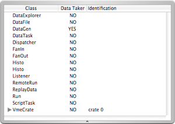
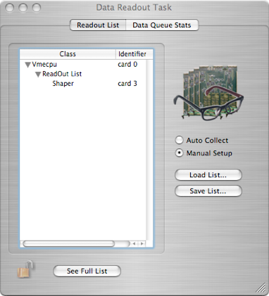
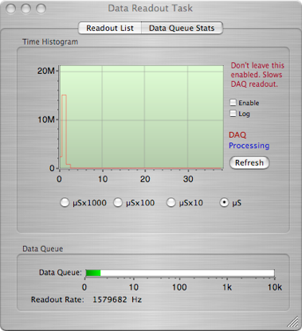

Data Storage



The Data Task object is used to determine what objects Orca will take data from. The Data Queue tab displays the number of events that have been collected but not yet been processed.

Drop items from the configuration or select items form the list below to take data during run. Some items control a read out hierarchy of objects placed under their control.

Loads a previously saved readout list or saves the current one.
Manual set-up allows customization of the read out list. The auto collect reads from all data takers in the configuration. This mode is rarely used.
Opens/Closes the full list drawer seen below.
You can drag items from this list to the above read out list
Data Records
Starting with data version 2, generic records are treated just like data records. The data read out object no longer produces data records of any kind.
The following description is obsolete and only applies to pre-version 2 data streams.
This object does not produce data but will package 'records' on the request of other objects and insert those records into the data stream. A generic record looks like this:
generic data record - variable length:
xxxx xxxx xxxx xxxx xxxx xxxx xxxx xxxx
^^^^ ^----------------------------------ORDataTask ID from the header
--------------------^^^^ ^^^^ ^^^^ ^^^^-length of the generic data
n bytes of generic data follow immediately.
Each object that can produce a generic record has it's own format (i.e. ORShaperModel record). It is possible that multiple generic records will be packaged together.

Displays the number of record blocks in the queue waiting to be processed. Also displays the cycle rate of the data taking task.
This time histogram is useful mainly for debugging. -- it can give some idea of the length of time it takes to cycle thru all of the objects being read out.
If you use this feature, do not leave it enabled during production running as it slows the data read out slightly.